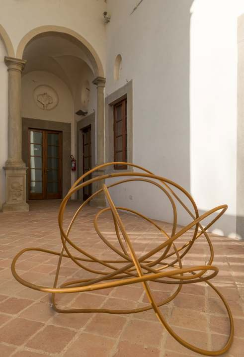
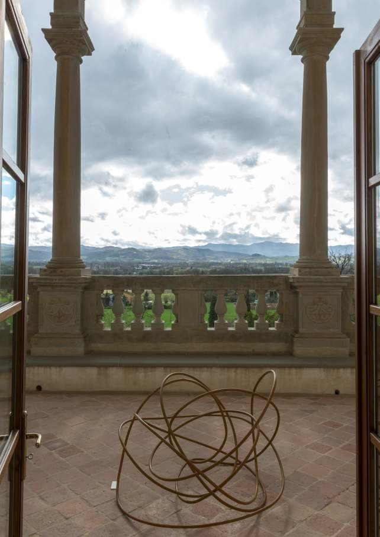

nodi

Nodo 1, 1986, alluminio, dimensioni variabili, San Giustino (PG), Villa Magherini Graziani di Celalba
Il percorso artistico di Pierelli si sviluppò attraverso due linee di ricerca parallele.
La prima fu un tentativo di indagine accurata del mondo e dell’universo in tutte le loro forme d’esistenza possibili, ispezione che portò l’artista a concepire e condividere un’immagine armoniosa e concettualmente chiara e ordinata della realtà. Tuttavia, la constatazione della visione di una realtà multi-sfaccettata, pur se governata da regole specifiche, e la continua ricerca di uno strumento di indagine scientificamente valido ma al tempo stesso aperto alle probabilità dell’imprevisto, portarono l’artista ad intraprendere più volte una seconda - decisamente meno razionale - linea di ricerca: quella affidata alla ludica casualità dell’intuizione. Ma, con la creazione di opere quali Superfici a Cuspide, Ipercubo e T.E.S.T., Pierelli dimostrò come spesso entrambe le sue linee di ricerca riuscissero ad intrecciarsi straordinariamente.
Circa vent’anni dopo la vicenda relativa a Renè Thom e alla sua Teoria delle Catastrofi, ed in occasione dell’esposizione della XVII Triennale di Milano, Franco Ghione si rivolse nuovamente a Pierelli per la realizzazione di sculture sinusoidali che raffigurassero dei Nodi. L’artista ebbe così modo di apprendere la bellezza di quelle regole geometriche che conducono alla conoscenza degli sviluppi avanzati della geometria contemporanea; avendo altresì la consapevolezza di aver dato vita, per l’ennesima volta, a nuove forme archetipe.
«Una matita si muove. Lascia la sua traccia sulla carta. Non passa mai dove passata e alla fine torna al punto da cui era partita. Il risultato, che può essere complicato, labirintico, fantasioso dà luogo sempre ad uno stesso fenomeno: il piano si divide in due regioni quella dei punti interni alla linea e quella dei punti esterni proprio come se la linea fosse semplicemente un cerchio e infatti ad un cerchio può con continuità sempre ridursi.
Pierelli fa correre la sua "matita" nello spazio. Ne vediamo la traccia. La traccia di questo chiarore metallico, di questo denso raggio di luce che sale, si incurva, entra in se stesso, riesce e rientra, per tornare ancora là dove era partito. È ancora una linea chiusa. Ma ora siamo nello spazio e la linea è annullata. Non riusciamo a sciogliere il nodo con continuità senza fare tagli senza usare violenza sulla materia.
Ci rendiamo conto di una complessità che ci spaventa. Non è più come nel piano. La linea non riusciamo a ridurla con continuità ad un semplice cerchio. E i nodi diventano sempre più complessi, irrisolvibili e misteriosi.
Poi una nuova idea. Dal nodo nasce a poco a poco una superficie. La superficie si completa ed il nodo è il suo cordone il suo bordo. Abbiamo riempito di una sottile patina lo spazio circoscritto dal nodo ed essa si adagia, in modo naturale, entro questi confini piegandosi armoniosamente per riempire in modo inaspettato e curioso lo spazio delimitato dal nodo. Come acqua saponata che si dilata entro questa linea che la costringe, tesa nello sforzo di riempire un'area più piccola possibile. La forma inattesa di questa "bolla di sapone" nella sua affascinante naturalezza ci illumina. Capiamo di più, capiamo di più anche la struttura del nodo che inizialmente ci aveva spaventati. Il nostro occhio, nostra intuizione, la tecnica matematica più facilmente domina e classifica la forma di queste superfici. Lo studio per capire il nodo. Se la superficie non ha buchi, è dello stesso tipo di quella delimitata da un cerchio allora il nostro nodo può essere sciolto. Questo salto dimensionale è tra i metodi più usati nelle moderne ricerche geometriche. Una forma che ci appare complessa nella sua dimensionalità, spesso appare, paradossalmente, molto più semplice se interpretata in una dimensionalità maggiore. È per questo che sia la matematica che la fisica, utilizzano gli iperspazi di dimensione anche molto grande per lo studio di fenomeni complessi che avvengono nello spazio tridimensionale.
Le superfici minime associate ad un nodo sono un esempio di questo processo e rappresentano delle forme che, per il loro essere "estremali", appaiono in modo naturale come elementi costruttivi di una nuova geometria non più fatta di triangoli, quadrati e rapporti aurei. Lo scultore Pierelli ha colto nel suo immaginario poetico questa ricchezza figurativa, questo salto dimensionale che apre le sue porte su un universo geometrico straordinariamente ricco e, paradossalmente, più intelligibile»

Nodo 1, 1986, alluminio, dimensioni variabili, San Giustino (PG), Villa Magherini Graziani di Celalba